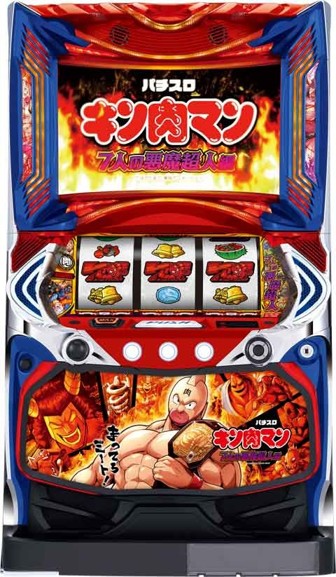
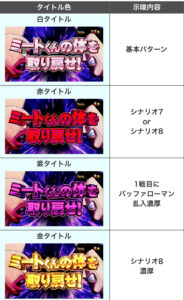
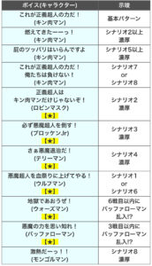
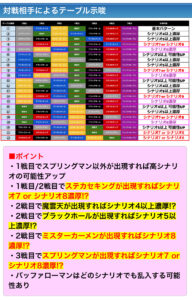
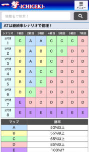
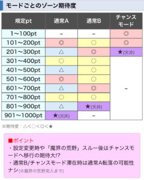
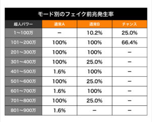
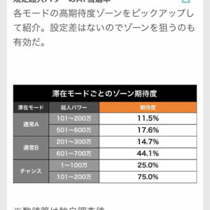

Lキン肉マン

【天井情報】
1000万pt(平均583G)でAT当選
[リセット関連]
ガックンあり
※筐体によってわかりにくいケースあり
内部G数で前兆発生
狙い目
この台はSP狙いがメイン。
セリフでの押し引き
{kind=link}
メニュー画面、終了画面の示唆
{kind=link}
{kind=link}
※5回以内の示唆は、次回以降のAT5回以内となります。
例
①リセ1回目終了画面5回以内示唆
→リセ6回目までにSP発動
②荒野後1回目メニュー画面5回以内示唆
→荒野後5回目までにSP発動
テンパイボイス、タイトル色、対戦相手のテーブル示唆、ATシナリオ
   
{kind=link}
{kind=link}
{kind=link}
{kind=link}
モードごとのゾーン期待度、モード別のフェイク前兆発生率、滞在モードごとのゾーン期待度
  
{kind=link}
{kind=link}
{kind=link}
メシアSP、シナリオSP振り分け
{kind=link}
{kind=link}
その他 狙い目等
【示唆の基本】
①セリフ示唆（青と緑）
ウオーズマン
→バッファローSP示唆
ミート君
→シナリオSP示唆
キン肉マン
→バッファローSP&シナリオSP示唆
モンゴルマン白セリフ
→メシアSP示唆
②メニュー画面の示唆
悪魔超人系
→SPモード期待度中や強は当該にSPが期待できる。
ただ、そこまでのセリフ次第で押し引きを判断する。
③荒野後の打ち方
150まで打ってメニュー画面で悪魔超人の当該示唆の場合、250まで見た方が良い。
【リセ狙いで優先すべきことと】
朝二モードb狙いについて
モード移行について
一度モードb移行すると荒野突入するまでモードダウンがありません。
チャモ(チャンスモード)からは20%チャモループ、80%モードb
モードbについて
モードa初当たり1/437
モードb初当たり1/359
シナリオ振り分けにも特徴があり
モードa、チャモ初当たり時の6割以上テンパイボイスと対戦キャラでシナリオ2以上が確定します。
これに対してモードb初当たり時は実践時9割近くテンパイボイスがデフォ、対戦キャラが〇〇以上示唆があるもののシナリオ2以上を確定するものが1割未満になってます。
各シナリオテーブルから推測すると
モードaでの初当たりは1戦目(55%)が冷遇され2戦突破さえすれば自力で上位に行く可能性が高く
モードbでの初当たりは１戦突破(65%)が優遇されている分２戦目以降が冷遇されている仕様になっています。
モードb時
シナリオspはモードに関係なく発動しますが
バッファローマンsp時は１戦目に左右されるためモードaよりもモードbが突破率が優遇されています。
リセ時チャモフェイク前兆の特徴
50-70mp間にフェイク前兆発生
100-200mp間にフェイク前兆発生なし
リセ時この2パターンはチャモの可能性が非常に高いです。
チャモ時の初当たり振り分けが
①50-100mpでの当選はチャモ確定
②100-200mpでの当選はモードa or チャモ(50-70mpで前兆ありならチャモ濃厚、それ以外モードaの可能性大)
③200-300mpでの当選はモードb or チャモ
(テンパイボイス、対戦キャラがデフォならモードbの可能性が大、シナリオ2以上ならチャモ濃厚)
以上の特徴を踏まえて
朝一と朝二の立ち回り改を考察
朝一複数台を打てる環境下にいる方
0-70mp まで回す
前兆発生時→250mpまで
終了画面がキン肉マン
一旦やめ
朝二の台
前回チャモ確定台
250mpまで回す
朝一と違い
20%チャモループ、80%がモードbで200-300当選期待度が14%あるため250mpやめになります。
朝ニ履歴打ち
履歴上チャレンジの短縮がなければ80g付近の当選履歴が前回チャモの可能性が高い、セリフとメニュー確認で250mpまで打ちます。
チャモ即やめ狙いの利点として、
１回目チャモ当選の場合セリフ示唆をほとんど見れていない可能性が高く、即やめの場合のほ終了画面がキン肉マンの可能性が高いです。
５回以内にspが潜んでいる場合に終了画面がキン肉マンが選択されるとsp解放が近い示唆になります(前回note参照)
モードb以上かつわずかながら当該に期待でき、さらに５回以内示唆を察知することを考えると打つのに十分な根拠があります。
【荒野後大まかな狙い方】
荒野後は基本的に150メニュー中心で立ち回った方がいい。
1回目のメニューが当該示唆系なら250までセリフ見る、当該示唆あると荒野後ならモンゴルマンセリフが1回でも出現で当該SP解放の期待大。
メニューが5回以内示唆ならSP解放まで打っても良い。
メニューが正義超人系なら当該をほぼ否定する。セリフ次第で即やめ。
緑系出現1回のみ、メニューが正義超人系の場合、メシアSP自体セリフが弱い傾向にあり、ガセも見抜きにくいため、一旦リリースすることをおすすめする。2回以上の出現もしくはセリフが強い場合は示唆見ながら打っても良い。
荒野後1回目即当たりでメニュー確認できない場合、終了画面がキン肉マンでも150まで回す。5回以内SPなら終了画面キン肉マン出現で当該の可能性があがるため。これでメニューが当該示唆系ならほぼ解放。
メニュー当該示唆とは
マウンテン、ミスターカーメン、スプリング、アトランティス、謎の悪魔超人
当該期待度激低メニュー画面
テリーマン、ウルフマン、ロビン、ブロッケン
【よくある質問】
Q.150まで打って緑セリフ1回出たけど、他は白セリフばかり。続行すべき？
A. 緑系出た時は基本的にAT当選まで。AT当選後はセリフ次第で押し引き。
ただし緑セリフがウォーズマン、ミートくん、キン肉マンならバッファロー、シナリオSPの示唆も兼ねてるので、強気に続行するケースあり。
Q.150の前兆で緑アイキャッチ出ました。SP当選まで続行？
A.緑系出た時は基本的にAT当選まで。AT当選後はセリフ次第で押し引き。
Q.正義超人チャレンジですぐ当たってしまいました。リセ2回目は150まで回した方が良い？
A.セリフ数回程度なら再度150まで。ただ、他にリセ台残ってるならそちらを優先。
Q. すぐ当たって終了画面が、正義超人集合or悪魔超人集合orバッファローマンが出た場合は続行？
A. リセならほぼバッファロー、シナリオSPなのでSPまで。
荒野後はメシアSP多いので、1回目出現以外は基本やめ。
Q.リセットを打ったら、チャレンジ当選でセリフほぼ見れず150まで行ってしまいました。
その場合のやめ時は？
A.100-150の前兆見てやめ。リセ時は150までの当選率が高いから打てる感じです。
Q.引き戻しはいくつまでですか？、at性能はひきつぎますか？
A. 引き戻しは実ゲーム120+α
at性能を引き継ぐわけではなく、バッファローマンまでのカウンターを引き継ぎます。
バッファローspはバッファローまでのカウンターはゼロなので引き戻せたときは1回目からバッファローが乱入します。
また自力で7戦目負けした際もバッファローカウンターがゼロなので引き戻しを見てください。
Q.セリフカウントについて
A. 2段階セリフのチャンス、
前兆前の謎超人からキン肉マンへの2段階セリフ
はカウントしないです!
Ｑ.よくあるガセパターン
A.実践例
1回目
緑系1回のみで
白セリフが90%前後
終了画面
キン肉マン
2回目
メニュー ビビンバ
白セリフ 90%前後
ステチェンなし
終了画面 モンゴルマン
このパターンに気をつけてください！
1回目セリフが弱いので
パターンとして終了画面から悪魔超人が出やすいはずです。
ここで5回以内にspがいる時の当該示唆キン肉マンが出現するもセリフ出現率が改善されないということは
そもそも1回目の緑系がガセだった可能性非常に高くなります。
Ｑ.注意点
A.緑系演出はがせることがある。
※がせるとは5回以内にsp解放しないこと
1回目の出現では信頼度が低いため他の示唆と合わせて考える必要がある。
終了画面、メニュー画面示唆は本当に稀にガセ、確定と思って良さそうだけど注意を
実ゲーム120+αで引き戻せば勝利数引き継ぎするため、7戦目バッファロー負けまたはバッファローsp負けの時は必ず引き戻しを確認
リセット後と荒野後は同じように狙えない。
Ｑ.バッファローsp発動持ち越しパターン
A.
次回バッファローsp発動濃厚時
バッファロー7戦目負けして、120以内に引き戻して1戦目バッファロー乱入した場合
これは7戦負け引き戻しバッファローの可能性があり、バッファローsp自体が次回に持ち越しされるパターンを確認。
稀な挙動だが、確認した際はバッファローsp発動に注意を。
このパターンは完全否定されました引き戻しバッファローとspバッファローが被った場合はsp発動されます。
Q. キン肉マンのリセット、荒野後打つのに必要な時間の目安は？
A. リセット後の台は期待値が高い代わりに荒野後に比べ発動タイミングが読みにくい。そのため最大5回目ハマりも考慮して5時間以上は確保する必要がある。実践上6時間以上かかったことがある。当該やよほど近い場合はその限りではない。
荒野後はリセット後に比べ期待値は高くないがspの発動タイミングが読みやすいため、4時間以内でも当該なら狙いやすい。メシアが多いため当該以外なら割り切って捨てることもできる。こちらもできれば5時間は確保した方が安心できる。
Q.リセット後と荒野後の緑系示唆ガセ時のリスクの違いは？
A. リセット後はspが9回以内に優遇されているため、仮に朝早い段階でガセ緑系出現しても6.7回目のspによって2.3回目に本当の示唆が出現する。リカバリーが効くためガセ示唆に捕まっても少しだけリスクが低い。
荒野後はspが3回以内に存在しない場合ガセ緑出現で本当のspが捉えられない可能性が上がる。そのためメニュー、終了画面示唆がかなり重要になってくる。据え置き狙いする場合は下見が必須。下見してない場合は緑系示唆を捨てる覚悟で打つ必要がある(お勧めしない)。
Q. メニューと終了画面示唆が出現しない場合のガセの可能性
A.終了画面とメニュー示唆が中々出現しない場合ガセが考えられます。
緑系複数出現は9割以上大丈夫ですが、中々画面とメニュー示唆が出現しない場合ガセの場合も考えられます。
Q.チャレンジ間ハマりとアタックについて
A. あくまでも個人の考察
おそらく内部高確をスルーすればするほど
チャレンジレベルが上がります。
チャレンジレベルが3になったらアタック確定します。
高確は小役を引けばつくので
高設定の方がアタック引きやすい仕組みになります
現状、結果的にハマってる方がアタック行きやすいみたいな認識になってます
Q.複数台打てる環境におけるリセ狙いの打ち方
最初のアイキャッチのみ確認はリスクが高いのでおすすめしません。
お勧めする狙い方
1、70mp付近まで打ってチャンスモードチェック、前兆発生で250mpまでフォロー、前兆発生なしで一旦リリース
リセ後70mpまでに前兆発生時はチャンスモード期待大、前兆発生時は250mpまでに8割以上当選、当選後も荒野までモードb以上をキープ、sp潜伏時は優位に展開を進められる
2、70mp消化台を150mpまで消化アイキャッチ、セリフ確認
Q、モードAからモードBに移行しますか？
はい、します。
基本的にモードaからチャモ→モードbが一般的なイメージですが
モードaから直接モードbに移行することはあります。
Q.リセット台の朝一回目上位で荒野突入後、朝2回目(この場合は荒野1回目)のビビンバについて
A、リセット台ならビビンバは朝から2回目のメニューに出現します。
これは荒野を跨いでも同じ数え方になります。
なのでリセット台なら朝一回目で上位突入しても次の荒野後1回目(つまり朝から2回目)のメニューはほぼビビンバになります。
基本情報
- メーカー: セブンリーグ
- 機械割: 97.9% 〜 114.9%
- 導入開始日: 2023年08月07日（月）
- ゲーム性概要: 人気の高い「7人の悪魔超人編」をモチーフにしたパチスロ。 ATはつねに純増約6.1枚/Gで、メインAT「7人の悪魔超人」でバッファローマンを撃破すると突入する「魔界ループ」が、出玉増加の強力なトリガーとなる。


打ち方
打ち方・小役
BAR狙い（小役狙い）
［最初に狙う絵柄］ 基本的に取りこぼしはないため、全リールフリー打ちでOK（チェリーも代用で取りこぼさない）だが、成立役を見極めるために左リール上段付近BAR狙いをオススメ。ナビ非発生時は左リール1stで消化しよう。

［BAR下段停止］ 成立役：ハズレorベルorリプレイorチャンスベルorチャンス目A

［角チェリー停止］ 成立役：弱チェリーor強チェリー

弱チェリーは2枚、強チェリーはリプレイなので払い出しで判別することもできる。
［スイカ上段停止］ 成立役：スイカorチャンス目B

［レア役の停止例］

右リール中段リプレイでも強チェリーの場合があるので、払い出し枚数やフラッシュで確認するのがベストだ。
※数値等は独自調査値
変則押しはNG
ナビ非発生時は基本的に左リール1stで消化しよう。

※数値等は独自調査値
AT中の打ち方
ナビに従って消化。ナビ非発生時は通常時同様の小役狙いで消化しよう。

※数値等は独自調査値
赤7狙い（小役狙い）
［最初に狙う絵柄］ 上段〜枠上に赤7を目押し。

［赤7上段停止］ 成立役：ハズレorリプレイorチャンス目A

［角チェリー停止］ 成立役：弱チェリーor強チェリー

［スイカ下段停止］ 成立役：ベルorスイカorチャンスベルorチャンス目B ※目押しをミスると上記停止形でもハズレやリプレイの可能性あり

［レア役の停止形］

※チャンス目はリプレイフラグ
※数値等は独自調査値
紫7狙い（打ち方）
［最初に狙う絵柄］ 左リール枠内に紫7を目押し。第2〜3停止まで成立役がわかりづらい打ち方なので、AT中のメシア小役にドキドキしたい時にオススメだ。

［中段リプレイ停止］ 成立役：ハズレorリプレイor1枚ベルorチャンスベルorチャンス目

［紫7下段停止］ 成立役：リプレイorスイカor弱チェリーor強チェリー

［赤7上段停止］ 成立役：チャンス目 ※目押しが正確ではない場合はチャンス目以外もあるので注意

［レア役の停止形］

※数値等は独自調査値
解析情報通常時
小役関連
レア役確率
※数値等は独自調査値
内部状態関連
高確概要
通常時には超人パワー上乗せゾーン当選率の異なる通常・高確があり、通常滞在時はレア役、高確滞在時は全役で超人パワー上乗せゾーンを抽選。超人パワー上乗せゾーン終了後は必ず高確からスタートする。
高確移行率
| 契機 | 移行率 |
|---|---|
| 設定変更後 | 約25% |
| AT（魔界含む）終了後 | 約25% |
| フェイク前兆終了後 | 約25% |
| 弱チェリー | 高確率で移行 （高確移行のメイン契機） |
| 強レア役 | 100% |
高確中のポイント
| 要素 | ポイント |
|---|---|
| 転落抽選 | 保証ゲーム数消化後に転落を抽選 |
| 前兆中の扱い | AT前兆は保証ゲーム数減算ストップ ※フェイク前兆でも減算ストップ |
| 保証ゲーム数の引き継ぎ | 高確状態は超人パワー上乗せゾーンや AT（魔界除く）を跨いでも引き継ぐ |
通常時のステージ解説はコチラ
※数値等は独自調査値
高確のポイント抽選
高確状態の継続は内部的なポイントで管理されていて、ポイントがある限り高確状態が継続（高確移行＝1pt以上獲得）。 毎ゲーム約1/3で1pt減算が抽選 される。超人パワー上乗せゾーン終了後を除き、基本的に高確突入時は7pt以上を獲得しているため、最低でも7G以上継続する。
高確移行契機別の高確ポイント
| 高確移行契機 | 獲得する高確ポイント |
|---|---|
| 小役契機→高確当選 | 7～12pt |
| AT後/設定変更後/魔界後/前兆消化後→高確当選 | 7～25pt |
| 超人パワー上乗せゾーン終了後 | 1pt |
※数値等は独自調査値
超人パワー上乗せゾーン当選率
| 役 | 通常滞在時 | 高確滞在時 |
|---|---|---|
| 1枚ベル | － | 5.1% |
| チャンスベル | － | 30.1% |
| 弱チェリー | － | 60.9% |
| スイカ | 12.1% | 100% |
| 強レア役 | 52.0% | 100% |
※数値等は独自調査値
レア役契機の高確移行率
| 役 | 移行率 |
|---|---|
| チャンスベル | 9.8% |
| 弱チェリー | 51.2% |
| 強レア役 | 97.7% |
※数値等は独自調査値
モード
モード概要
3つのモードでAT当選までの超人パワー（ゲーム数）テーブルを管理。超人パワーは1Gに1万加算され、超人パワー上乗せゾーンで一気に加算することもできる。基本的に前兆ステージの「正義の名の下に」を経由して当落を告知。 魔界ループへ移行するまでモードの転落はなく、設定変更時や魔界ループ後はチャンスモードスタートに期待できる 。 50万パワー前後で前兆ステージ（正義の名の下に）に突入した場合は300万パワー以内でのAT当選に期待できる。
モードごとの天井＆天井までの平均ゲーム数
| モード | 天井 | 天井までの平均ゲーム数 |
|---|---|---|
| 通常A | 1000万パワー | 583G |
| 通常B | 900万パワー | 529G |
| チャンス | 300万パワー | 176G |
※実際の平均ゲーム数は設定1の数値
モード別の平均規定超人パワー
| モード | 設定変更後 | 左記以外 |
|---|---|---|
| 通常A | 683万パワー | 743万パワー |
| 通常B | 598万パワー | 611万パワー |
| チャンス | 121万パワー | 121万パワー |
モードごとの超人パワーテーブル
| 超人パワー | 通常A | 通常B | チャンス |
|---|---|---|---|
| 1～100万 | － | － | ◎ |
| 101～200万 | ◎ | ○ | ◎ |
| 201～300万 | △ | ◎ | 天井 |
| 301～400万 | ○ | ○ | － |
| 401～500万 | △ | ○ | － |
| 501～600万 | ◎ | ○ | － |
| 601～700万 | △ | ◎ | － |
| 701～800万 | ○ | ○ | － |
| 801～900万 | △ | 天井 | － |
| 901～1000万 | 天井 | － | － |
※数値等は独自調査値
チャンスモードの性能
設定変更時は 約25% でチャンスモードへ移行。さらに、チャンスモードはスペシャルモードと同じく 内部的なポイントが規定数まで貯まるとAT終了後に移行する仕組み となっていて、ループする可能性もある。基本的にAT当選ごとにポイントが貯まり、設定変更後であればAT8〜10回後に移行する割合は約50%。状況次第だが、チャンスモードを狙いの立ち回りもアリだ。
チャンスモード中のAT当選期待度
| 超人パワー | 期待度 |
|---|---|
| 1～100万 | 25.0% |
| 101～200万 | 75.0% |
| 201～300万 | 天井 |
※数値等は独自調査値
裏モード概要
裏モードはAT終了時に抽選され、魔界ループ終了まで転落しない。裏モード中は正義超人アタック昇格率や、正義超人チャレンジ中のBAR揃い時にAT直撃を抽選するといった特典がつく。
裏モード性能
| 項目 | 内容 |
|---|---|
| 移行契機 | AT（魔界含む）終了時の一部 |
| 終了契機 | 魔界ループ突入まで |
| 恩恵 | 正義超人アタック昇格率がアップ |
| 恩恵 | 正義超人チャレンジ中のBAR揃い時に AT直撃を追加で抽選 |
※数値等は独自調査値
前兆発生率
各モードごとにフェイクを含む前兆（おもに正義の名の下に）発生率が変化する。 100万パワー以内に前兆に突入した場合は通常Borチャンスモードが確定 。超人パワー上乗せゾーンで規定ゲーム数を跨いだ場合は、約1/4でフェイク前兆が発生する
モード別のフェイク前兆発生率
| 超人パワー | 通常A | 通常B | チャンス |
|---|---|---|---|
| 1～100万 | － | 10.2% | 25.0% |
| 101～200万 | 100% | 100% | 66.4% |
| 201～300万 | 100% | 100% | － |
| 301～400万 | 100% | 25.0% | － |
| 401～500万 | 1.6% | 100% | － |
| 501～600万 | 100% | 25.0% | － |
| 601～700万 | 1.6% | 100% | － |
| 701～800万 | 100% | 25.0% | － |
| 801～900万 | 1.6% | － | － |
※数値等は独自調査値
裏モード移行率
裏モード移行後は魔界の荒野に突入（有利区間終了）まで継続する。
※数値等は独自調査値
規定超人パワーのAT当選率
各モードの高期待度ゾーンをピックアップして紹介。設定差はないのでゾーンを狙うのも有効だ。
滞在モードごとのゾーン期待度
| 滞在モード | 超人パワー | 期待度 |
|---|---|---|
| 通常A | 101～200万 | 11.5% |
| 通常A | 501～600万 | 17.6% |
| 通常B | 201～300万 | 14.7% |
| 通常B | 601～700万 | 44.1% |
| チャンス | 1～100万 | 25.0% |
| チャンス | 101～200万 | 75.0% |
※数値等は独自調査値
前兆
AT前兆中の抽選
フェイク前兆中はもちろん、AT本前兆中も超人パワー上乗せゾーンを抽選。当選した場合、フェイク前兆時は前兆終了時、本前兆中はAT終了時に前兆を経て告知される（魔界ループ突入時は除く）。
※数値等は独自調査値
前兆中の超人パワーの持ち越し
「正義の名の下に」滞在中も超人パワー加算は抽選されていて、本前兆だった場合は余剰分を次回に持ち越す（魔界突入時は非有利区間へ行くためリセット）。見た目上は持ち越されていないが、内部的に加算されている。
※数値等は独自調査値
超人パワー上乗せゾーン
正義超人チャレンジ概要
毎ゲームの成立役で上乗せする超人パワーを抽選。青オーラ・赤オーラの2種類があり、赤のほうが上乗せ性能が高い。1セット5Gだがループ性があるため、連続して突入するケースもある。

正義超人チャレンジ性能
| 項目 | 青 | 赤 |
|---|---|---|
| 突入契機 | 小役による抽選 | |
| 継続ゲーム数 | 5G（ループ性あり） | |
| 滞在中の抽選 | 毎ゲーム成立役を参照して超人パワーを上乗せ | |
| 平均上乗せ | 50万パワー | 144万パワー |
| 1Gの上乗せ | 5万～700万パワー | 20万～700万パワー |
| 備考 | 超過した超人パワーはAT終了後に持ち越し |
正義超人チャレンジ確率
| 設定 | 確率 |
|---|---|
| 1 | 1/99.8 |
| 2 | 1/98.6 |
| 4 | 1/96.3 |
| 5 | 1/94.2 |
| 6 | 1/91.7 |
成立役別の上乗せ超人パワー期待度序列
| 役 | 期待度 |
|---|---|
| ベル | 低 |
| 弱レア役 | ↓ |
| BAR揃い | ↓ |
| 強レア役 | 高 |
成立役別の上乗せ超人パワー
| 役 | 超人パワー |
|---|---|
| ベル・リプレイ | 10～700万 |
| 弱レア役 | 30～700万 |
| 強レア役 | 100～700万 |
［青オーラ］

［赤オーラ］

［最終ジャッジ］ 最終ゲームで規定超人パワーに届いていたかをジャッジ。一撃と連打の2種類から任意で選択することができる。

※数値等は独自調査値
正義超人アタック概要
高確率で規定超人パワーまで到達する激アツの超人パワー上乗せゾーン。押し順の1stナビで選ばれた正義超人によって上乗せ期待度が変化する。超人魂を1つ持った状態でスタートして、1stナビでサタンが選ばれると1個減少。0個の状態でサタンが選ばれると終了となる。

正義超人アタック性能
| 項目 | 内容 |
|---|---|
| 突入契機 | 正義超人チャレンジ本前兆中の 小役による抽選 |
| 継続ゲーム数 | 超人魂0個時にサタンが選ばれるまで |
| 滞在中の抽選 | 1stナビの正義超人に応じて超人パワー加算 |
| 滞在中の抽選 | 1stナビでサタンが選ばれると超人魂が1つ減少 |
| 滞在中の抽選 | レア役で超人魂を1個以上加算 |
| 平均上乗せ | 1029万パワー |
| 1Gの上乗せ | 20万～1200万パワー |
| 備考 | 超過した超人パワーはAT終了後に持ち越し |
正義超人アタックの平均獲得超人パワー分布
| 超人パワー | 分布 |
|---|---|
| 1000万以上 | 39.5% |
| 2000万以上 | 12.8% |
| 3000万以上 | 4.8% |
正義超人ごとの上乗せ超人パワー期待度序列
| 正義超人 | 期待度 |
|---|---|
| ウルフマン | 低 |
| ブロッケンJr. | ↓ |
| ロビンマスク | ↓ |
| テリーマン | ↓ |
| モンゴルマン | ↓ |
| ウォーズマン | ↓ |
| キン肉マン | 高 |
［正義超人ならアイコンゲット］ 1stナビで正義超人が選ばれると正義超人のアイコンをゲット。終了後、超人パワーとしてまとめて放出される。

［超人魂］ レア役を引けば必ず超人魂が1個以上加算される。

［サタンはピンチ］ サタンがいる時に1stナビでサタンを選んでしまうと超人魂が1つ減算される。

［終了時のアイコン放出］ 獲得した正義超人ごとに超人パワーに換算。各キャラの多彩な必殺技も見ることもできる。

※数値等は独自調査値
正義超人アタックの超人ごとのタイプ＆獲得超人パワー
キン肉マンはトータル300万パワー獲得濃厚、ウォーズマンは原作ファンおなじみのウォーズマン理論発動で1200万パワー獲得濃厚となる。
超人ごとの演出タイプ＆獲得超人パワー
| 超人 | 演出タイプ | 獲得超人パワー |
|---|---|---|
| ブロッケンJr. | 倍々 | 20～160万パワー |
| ウルフマン | 連打 | 20～210万パワー |
| ロビンマスク | 連打 | 20～210万パワー |
| テリーマン | 一撃 | 40～200万パワー |
| モンゴルマン | 一撃 | 100～200万パワー |
| ウォーズマン | 倍々 | 40～1200万パワー |
| キン肉マン | 特殊 | 300万パワー |
［ウォーズマン理論］

［キン肉マン］

※数値等は独自調査値
正義超人アタック昇格抽選
超人パワー上乗せゾーン間のハマリゲーム数が深いほど、正義超人チャレンジ当選時の正義超人アタック昇格率が優遇。 超人パワー上乗せゾーン終了後に次回の種別が抽選され、移行は毎ゲーム昇格を抽選。チャレンジレベル1：正義超人チャレンジ（青オーラ）⇒チャレンジレベル2：正義超人チャレンジ（赤オーラ）⇒正義超人アタックの順に昇格していく。チャレンジレベル2時は見た目上、青オーラの場合もあるが、赤オーラと同じく、1Gの最低上乗せ超人パワーが20万となるのですぐにわかる。 さらに、正義超人チャレンジ当選時の正義超人アタック昇格率が大幅に優遇される裏モードが存在する。
正義超人アタック昇格のポイント
| 要素 | ポイント |
|---|---|
| ハマリゲーム数 | 超人パワー上乗せゾーン間の ハマリゲーム数が深いほど昇格率アップ |
| 裏モード | 裏モード滞在中は昇格率アップ |
※数値等は独自調査値
正義超人アタック確率
| 設定 | 確率 |
|---|---|
| 1 | 約1/11814 |
| 6 | 約1/6787 |
※数値等は独自調査値
AT直撃当選率
正義超人チャレンジ中はチャレンジレベルに応じて、レア役時とBAR揃い時にAT直撃を抽選。 さらに、裏モード滞在時は上記抽選に加え、BAR揃い時に追加でAT直撃が抽選される。直撃抽選当選後はVストック獲得を抽選する。
AT直撃当選率（非裏モード中）
| 役 | チャレンジレベル1（青） | チャレンジレベル2（赤） |
|---|---|---|
| BAR揃い | 0.4% | 10.9% |
| 弱レア役 | － | 1.2% |
| 強レア役 | 3.1% | 50.0% |
［裏モード中］正義超人チャレンジの BAR揃い時AT直撃期待度
裏モード中の直撃は高設定ほど当選率が高い。直撃に2回以上当選した場合はVストックに変換される。
※数値等は独自調査値
正義超人アタックの正義超人＆サタン出現抽選
サタンが出現するのは3回目以降の奇数回時における抽選で選ばれた時のみ。つまり、サタンを回避した場合は次回（偶数回）は必ず正義超人×3になる。 サタンが選ばれた時の出現位置は左・中・右均等。2回目のサタンが選ばれた場合は基本的に正義超人アタック終了だが、約10.2%で継続になる。
3回目以降・奇数回のサタン出現割合
| パターン | 割合 |
|---|---|
| サタン出現 | 93.7% |
| 正義超人×3（サタン出現せず） | 6.3% |
正義超人の種類振り分け
| パターン | 振り分け |
|---|---|
| ウルフマン | 21.9% |
| ブロッケンJr. | 21.5% |
| ロビンマスク | 21.5% |
| テリーマン | 19.5% |
| ウォーズマン | 3.9% |
| モンゴルマン | 7.8% |
| キン肉マン | 3.9% |
サタン2回目選択時の結果振り分け
| 結果 | 割合 |
|---|---|
| 正義超人アタック終了 | 89.8% |
| 正義超人アタック継続 | 10.2% |
※数値等は独自調査値
演出動画
フリーズ
AT当選時にフリーズが発生すれば、スーパーヒーローモード突入が確定する。
フリーズ
正義超人集合フリーズ
フリーズ時は全勝が確定するシナリオ8（スーパーヒーローモード）になるうえ、メシア小役も全点灯。 シナリオ8ではVストックを消費しない ため、獲得したストックはすべて悪魔将軍バトル勝利書き換えや悪魔大行進初期枚数アップに変換される。


正義超人集合フリーズ性能
| 項目 | 内容 |
|---|---|
| 確率 | 約1/200000 |
| 当選契機 | シナリオSP発動時かつ AT準備移行時の約4.3%で発生 |
| 恩恵 | AT直撃＋シナリオ8（全勝） |
| 期待枚数 | 3500枚以上 |
※数値等は独自調査値
解析情報ボーナス時
AT/7人の悪魔超人
AT概要
7戦突破すれば魔界ループ（上位AT）へ突入するAT。7戦ごとの勝率（継続率＋自力継続）は8種類のシナリオ管理、消化中はVストックが抽選される。 対応したメシア小役を引けばVストックを獲得 できるため、自力継続も十分可能だ。強レア役はVストックが確定するだけではなくVストックの特化ゾーン「炎のキン肉マンチャレンジ」突入も抽選される。

7人の悪魔超人（AT）性能
| 項目 | 内容 | |
|---|---|---|
| 突入契機 | 規定超人パワー到達、フリーズ | |
| 1Gあたりの純増 | 約6.1枚 | |
| 各セットの 継続ゲーム数 | 前半パート | 11G |
| 各セットの 継続ゲーム数 | 後半パート | 15G |
| 滞在中の抽選 | レア役でVストック抽選、 ※強レア役時は特化ゾーンも抽選 | |
| その他 | 7戦目突破で魔界ループ突入 |
※初回突入時のみ3Gの導入パートが発生
［前半パート］ 前半で対戦相手が決定する。

［後半パート］ 後半では悪魔超人とのバトルが展開する。

「120G＋α以内の引き戻しで突破数の引き継ぎ」 7戦突破できなかった場合でも 120G＋α（平均5G）以内にATを引き戻した場合は突破数を引き継ぐ 。基本的にバッファローマンは7戦目の対戦相手として登場するが、引き継がれていた場合は6戦目以内に登場することがある（見た目上は1戦目からスタート）。 つまり、バッファローマンに勝利＝ 残りのセットがすべて勝利確定になり魔界ループに突入 。もちろん7戦目のバッファローマンに負けて120G＋α以内に引き戻せば1戦目からバッファローマンが登場する。 前兆やCZは規定ゲーム数以内に突入すれば、ゲーム数を過ぎても有効だ。
※数値等は独自調査値
メシア小役概要
「対応役を引けばVストック」 点灯しているランプに対応したレア役を引けばVストックを獲得。チャンス目と強チェリーは点灯ランプ不問でVストックが確定する。 セットごとに必ず1つ以上選ばれるが、ランプの個数が完全告知されるのは後半パート開始時なので、基本的に前半では対応役が見えないケースも多い（もちろん対応役を引けば内部的にストック確定）。

「前半に点灯していれば複数個確定」 後半パートでは、ランプが1つ追加する流れでランプが完全告知されるため、前半パートで点灯していた場合、内部的に複数個点灯が確定。後半に複数個が告知されることもある。

点灯ランプ別の対応役
| ランプ（色） | 対応役 |
|---|---|
| 友情（黄） | チャンスベル |
| 努力（赤） | チェリー |
| 正義（緑） | スイカ |
※強レア役（チャンス目・強チェリー）はランプ不問でVストック獲得
友情点灯時は押し順ベルや1枚ベル時の約0.4%でVストック を獲得。ただし、告知されないため見た目上での判別はできない。
※数値等は独自調査値
シナリオごとの勝率テーブル
| ATセット | シナリオ1 | シナリオ2 | シナリオ3 | シナリオ4 |
|---|---|---|---|---|
| 1セット目 | 65% 以上 | 55% 以上 | 55% 以上 | 55% 以上 |
| 2セット目 | 50% 以上 | 50% 以上 | 50% 以上 | 50% 以上 |
| 3セット目 | 50% 以上 | 55% 以上 | 55% 以上 | 65% 以上 |
| 4セット目 | 65% 以上 | 65% 以上 | 65% 以上 | 65% 以上 |
| 5セット目 | 65% 以上 | 65% 以上 | 85% 以上 | 85% 以上 |
| 6セット目 | 65% 以上 | 85% 以上 | 85% 以上 | 85% 以上 |
| 7セット目 | 85% 以上 | 85% 以上 | 85% 以上 | 85% 以上 |
| ATセット | シナリオ5 | シナリオ6 | シナリオ7 | シナリオ8 |
| 1セット目 | 55% 以上 | 55% 以上 | 100% | 100% |
| 2セット目 | 50% 以上 | 65% 以上 | 85% 以上 | 100% |
| 3セット目 | 65% 以上 | 85% 以上 | 85% 以上 | 100% |
| 4セット目 | 85% 以上 | 85% 以上 | 85% 以上 | 100% |
| 5セット目 | 85% 以上 | 85% 以上 | 85% 以上 | 100% |
| 6セット目 | 85% 以上 | 85% 以上 | 85% 以上 | 100% |
| 7セット目 | 85% 以上 | 85% 以上 | 85% 以上 | 100% |
※勝率はメシア小役などすべての要素を加味した数値
ATの各セットには5種類の勝率（継続率＋自力継続）があり、8種類のシナリオで7戦目までの期待値を管理している。
※数値等は独自調査値
Vストックの超過分
7人の悪魔超人で余剰したVストックは悪魔将軍バトルの勝利ストックとして使用（1つあれば勝利確定）。さらに超過した場合はストック個数分×50枚が悪魔大行進の初期枚数に上乗せされる。
※数値等は独自調査値
対戦相手テーブル
| No. | 1戦目 | 2戦目 | 3戦目 | 4戦目 | 5戦目 | 6戦目 | 7戦目 |
|---|---|---|---|---|---|---|---|
| 1 | スプ | ア | ミ | 魔 | ブ | ステ | バ |
| 2 | スプ | 魔 | ミ | ア | ブ | ステ | バ |
| 3 | スプ | ブ | ミ | 魔 | ア | ステ | バ |
| 4 | スプ | ステ | ミ | 魔 | ブ | ア | バ |
| 5 | スプ | ミ | ア | 魔 | ブ | ステ | バ |
| 6 | ア | スプ | ミ | 魔 | ブ | ステ | バ |
| 7 | ア | 魔 | ミ | スプ | ブ | ステ | バ |
| 8 | ア | ブ | ミ | 魔 | スプ | ステ | バ |
| 9 | ア | ステ | ミ | 魔 | ブ | スプ | バ |
| 10 | ア | ミ | スプ | 魔 | ブ | ステ | バ |
| 11 | ミ | スプ | ア | 魔 | ブ | ステ | バ |
| 12 | ミ | 魔 | ア | スプ | ブ | ステ | バ |
| 13 | ミ | ブ | ア | 魔 | スプ | ステ | バ |
| 14 | ミ | ステ | ア | 魔 | ブ | スプ | バ |
| 15 | ミ | ア | スプ | 魔 | ブ | ステ | バ |
| 16 | 魔 | スプ | ア | ミ | ブ | ステ | バ |
| 17 | 魔 | ブ | ア | ミ | スプ | ステ | バ |
| 18 | 魔 | ステ | ア | ミ | ブ | スプ | バ |
| 19 | 魔 | ア | スプ | ミ | ブ | ステ | バ |
| 20 | ブ | スプ | ア | ミ | 魔 | ステ | バ |
| 21 | ブ | ステ | ア | ミ | 魔 | スプ | バ |
| 22 | ステ | ブ | スプ | ア | ミ | 魔 | バ |
テーブル表の悪魔超人
| 表内の表記 | 悪魔超人名 |
|---|---|
| スプ | スプリングマン |
| ア | アトランティス |
| ミ | ミスターカーメン |
| 魔 | ザ・魔雲天 |
| ブ | ブラックホール |
| ステ | ステカセキング |
| バ | バッファローマン |
対戦相手テーブルごとの示唆
| No. | 示唆 |
|---|---|
| 1 | デフォルト |
| 2 | シナリオ4以上 |
| 3 | シナリオ5以上 |
| 4 | シナリオ7or8 |
| 5 | シナリオ8 |
| 6 | シナリオ2以上示唆 |
| 7 | シナリオ4以上 |
| 8 | シナリオ5以上 |
| 9 | シナリオ7or8 |
| 10 | シナリオ8 |
| 11 | シナリオ3以上示唆 |
| 12 | シナリオ4以上 |
| 13 | シナリオ5以上 |
| 14 | シナリオ7or8 |
| 15 | シナリオ8 |
| 16 | シナリオ4以上示唆 |
| 17 | シナリオ5以上 |
| 18 | シナリオ7or8 |
| 19 | シナリオ8 |
| 20 | シナリオ5以上示唆 |
| 21 | シナリオ7or8 |
| 22 | シナリオ7or8 |
※数値等は独自調査値
メシア小役のシナリオテーブル
メシア小役の点灯個数は対戦相手と同じくテーブルで管理されている。1戦目からメシア小役が3個ならシナリオ5の期待大だ。
メシア小役テーブルのシナリオ一覧
| バトル | シナリオ | ||||
|---|---|---|---|---|---|
| バトル | 1 | 2 | 3 | 4 | 5 |
| 1戦目 | LV1 | LV1 | LV2 | LV3 | LV4 |
| 2戦目 | LV1 | LV1 | LV2 | LV3 | LV4 |
| 3戦目 | LV1 | LV1 | LV2 | LV3 | LV4 |
| 4戦目 | LV1 | LV2 | LV3 | LV4 | LV4 |
| 5戦目 | LV1 | LV2 | LV3 | LV4 | LV4 |
| 6戦目 | LV1 | LV3 | LV3 | LV4 | LV4 |
| 7戦目 | LV1 | LV3 | LV4 | LV4 | LV4 |
メシア小役テーブルのレベル別特徴
| レベル | 特徴 |
|---|---|
| LV1 | デフォルト（メシア小役1個以上） |
| LV2 | メシア小役1個以上かつ2個以上になりやすい |
| LV3 | メシア小役2個以上 |
| LV4 | メシア小役3個 |
レベル別の対応メシア小役振り分け
| メシア小役 | LV1 | LV2 | LV3 | LV4 |
|---|---|---|---|---|
| スイカのみ | 45.7% | 35.2% | － | － |
| チェリーのみ | 44.1% | 35.2% | － | － |
| ベルのみ | 10.2% | 19.9% | － | － |
| スイカ＋チェリー | － | 5.1% | 43.8% | － |
| スイカ＋ベル | － | 2.3% | 25.0% | － |
| チェリー＋ベル | － | 2.3% | 25.0% | － |
| 3役 | － | － | 6.3% | 100% |
※数値等は独自調査値
AT準備中の抽選
準備中はVストックが抽選され、赤7揃い時（ATスタート時）にATのシナリオが決定する。

AT準備中のVストック抽選内容
| 契機 | 抽選 |
|---|---|
| 全役 | Vストック抽選 |
| 強レア役 | Vストック確定 |
| 30G消化 | Vストック確定 |
※数値等は独自調査値
継続抽選タイミング
継続率による継続抽選はATセット開始時に抽選。Vストックがある場合は継続抽選をおこなわずに使用される（勝率100%時は使用しない）。
※数値等は独自調査値
準備中〜オープニング中のVストック抽選
準備中はとオープニング中はレア役時にVストックを抽選（メシア役による継続抽選はない）。さらに準備中は 30G経過ごとにVストックを1つ獲得 する（オープニングは3G固定）。
AT準備中～オープニング中のVストック当選率
| 役 | 当選率 |
|---|---|
| ハズレ | 0.4% |
| 弱レア役 | 1.6% |
| 強レア役 | 100% |
バッファローマン乱入発生条件

バッファローマンSP滞在時または120G＋α以内の引戻しで合計勝利数が6勝に到達した場合（7回目）に発生する。
スペシャルモード（SPモード）
スペシャルモード解説
シナリオとは関係なく、ATの継続性能が大幅にアップする3種類のスペシャルモードが存在する。各モードは内部的に貯まるポイントが規定数に到達すると発動。AT初当り時に必ず1ptが加算される。 初期ポイントは設定変更後、スペシャルモード発動後、魔界ループ終了後に抽選される。
スペシャルモードの性能
| モード | 性能 |
|---|---|
| メシア小役SP | どのセットでもランプが複数個点灯 |
| シナリオSP | 全セットの継続率が85%以上にアップ |
| バッファローマンSP | バトル1戦目勝利で7戦目突破確定 ※1戦目で必ずバッファローマンが乱入 |
スペシャルモードの補足ポイント
| 項目 | ポイント |
|---|---|
| バッファローマンSP | ● AT初当りの奇数回に選ばれやすい |
| シナリオSP | ● AT初当りの偶数回に選ばれやすい |
| 魔界ループ後 | ● 魔界ループ終了後はAT初当り3回以内のスペシャルモード突入率約75% |
| モード発動後 | ● 魔界ループまで行けなくてもAT初当り3回以内にスペシャルモードが再セットされやすい |
［メシア小役SP］ ランプの複数個点灯が確定するため、ヒキ次第で大量のVストック獲得に期待できる。

［シナリオSP］ 初戦の対戦相手がステカセキングならシナリオSP発動中に期待！

［バッファローマンSP］ バトル1戦目でバッファローマンが乱入。勝利すれば7戦突破が確定する。120G＋α以内に引き戻しても1戦目からバッファローマンが登場するので、負けた場合でも続行を推奨だ。

※数値等は独自調査値
メシアSP中のメシア小役シナリオ振り分け
| シナリオ | 振り分け |
|---|---|
| シナリオ4 | 約75% |
| シナリオ5 | 約25% |
メシア小役テーブルのシナリオはコチラ
※数値等は独自調査値
シナリオSP時のシナリオ振り分け
シナリオSP発動時は正義超人集合フリーズ発生の可能性もあり（発生率は4.3%）、フリーズしなかった場合はシナリオ7以上が確定。フリーズ発生を含む、シナリオ8選択率は11.8%となる。
シナリオSP中の継続シナリオ振り分け （フリーズ非発生時）
| シナリオ | 振り分け |
|---|---|
| シナリオ7 | 92.2% |
| シナリオ8 | 7.8% |
シナリオ一覧はコチラ
※数値等は独自調査値
特化ゾーン/炎のキン肉マンチャレンジ
炎のキン肉マンチャレンジ概要
おもにAT中の強レア役契機で移行するVストックの特化ゾーンだ。

炎のキン肉マンチャレンジ性能
| 項目 | 内容 |
|---|---|
| 突入契機 | AT前半パート中の強レア役時の抽選 |
| 継続ゲーム数 | 7G＋α |
| 滞在中の抽選 | ベル・レア役でVストック抽選 |
| 平均獲得Vストック | 約2.6個 |
※数値等は独自調査値
魔界ループ：全体
魔界ループ概要
ST型の「魔界の荒野」で「悪魔将軍バトル」を抽選して、悪魔将軍バトルに勝利すれば最上位STの「悪魔大行進」に突入するというのが基本的なゲーム性。悪魔将軍バトル敗北時と悪魔大行進終了後は魔界の荒野がリスタートする。魔界の荒野で差枚数がプラスの場合、一旦有利区間が切れるため、上限枚数を気にする必要はない。

※数値等は独自調査値
エピソード概要
AT7戦突破後に突入する30G固定のAT状態で、終了後は勝利期待度約90%の悪魔将軍バトルに突入（この初戦のみ約90%で以降は約30%）。滞在中はレア役で悪魔将軍バトルの勝利ストック、勝利ストックあり時は悪魔大行進の初期枚数アップが抽選される。

※数値等は独自調査値
パターン別の獲得期待枚数（設定1）
| パターン | 期待枚数 |
|---|---|
| AT開始～エピソード（7戦目突破後）まで | 1302枚 |
| エピソード後の悪魔将軍バトル～魔界ループ終了まで | 2162枚 |
| 魔界ループトータル | 3464枚 |
※数値等は独自調査値
エピソード中の抽選
エピソード中は悪魔将軍バトル中と同じ抽選値で悪魔将軍バトル勝利を抽選。初回の悪魔将軍バトル期待度の高さはこのエピソード中の抽選や余剰Vストックがあることにも起因している。 画面の周囲にレインボーのエフェクトが表示されれば悪魔将軍バトル勝利濃厚だ。

エピソード中の悪魔将軍バトル勝利ストック当選率
| 役 | 当選率 |
|---|---|
| 弱レア役 | 50%以上 |
| 強レア役 | 100% |
※数値等は独自調査値
魔界ループ：魔界の荒野
魔界の荒野概要
全役で悪魔将軍バトルを抽選する30GのSTパート。悪魔将軍フリーズから悪魔大行進へ直行するパターンもある。

魔界の荒野性能
| 項目 | 内容 |
|---|---|
| 突入契機 | 悪魔将軍バトル敗北後、悪魔大行進後 |
| 継続ゲーム数 | 30G＋α |
| 滞在中の抽選 | 全役で悪魔将軍バトルを抽選 ※フリーズ発生で悪魔大行進直行 |
| 悪魔将軍バトル当選期待度 | 約70%（毎ゲーム1/28.1） |
※滞在中は押し順ベルのナビが発生しない
※数値等は独自調査値
悪魔超人集結フリーズ
初期枚数400枚以上の悪魔大行進が確定する。


悪魔超人集結フリーズ
| 項目 | 内容 |
|---|---|
| 確率 | 約1/1500 |
| 恩恵 | 初期枚数400枚以上の悪魔大行進 |
| 期待枚数 | 約1800枚 |
※数値等は独自調査値
弱レア役の期待度
弱レア役でも悪魔将軍バトル以上（悪魔大行進直行を含む）期待度は 約57% と高い。

悪魔将軍バトル当選率
| 役 | 当選率 |
|---|---|
| その他 | 2.0% |
| 弱レア役 | 58.6% |
| 強レア役 | 100% |
悪魔将軍バトル当選時に一律の確率で悪魔超人集結フリーズへの書き換えを抽選する。
※数値等は独自調査値
ゲーム数延長抽選
残りゲーム数が7G未満になると毎ゲーム延長抽選をおこない、当選すれば残りが7Gに変化。ただし、液晶上では判別できず、0Gになると残りゲーム数は？表示のままになる。
残り7G未満時のゲーム数延長（7Gに復帰）当選率
| 役 | 当選率 |
|---|---|
| その他 | 7.0% |
| レア役 | 100% |
※強レア役は悪魔将軍バトル当選確定
？表示になっても延長したゲーム数分続く。
※数値等は独自調査値
魔界ループ：悪魔将軍バトル
悪魔将軍バトル概要
1セット6Gのバトルで、勝利すれば悪魔大行進に突入。最大で5セットまで継続＆継続するほどバトル勝利期待度がアップする。

悪魔将軍バトル性能
| 項目 | 内容 | |
|---|---|---|
| 突入契機 | エピソード後、魔界の荒野中の抽選 | |
| 1セットの継続ゲーム数 | 6G（最大5セット） | |
| 滞在中の抽選 | バトル勝利（悪魔大行進突入）抽選 ※強レア役は勝利確定 | |
| 平均勝利 期待度 | エピソード経由 | 約90% |
| 平均勝利 期待度 | 魔界の荒野経由 | 約30% |
| 備考 | セット継続するほど期待度アップ |
※エピソード経由…AT7戦目突破後のエピソード後に突入する初戦
当選ルート別の平均継続セット数＆5R目到達率
| パターン | 平均セット数＆到達率 |
|---|---|
| エピソード（7人の悪魔超人）終了後 | 3.9セット |
| 魔界の荒野中の当選 | 2.8セット |
| ファイナルラウンド（5R目）到達率 | 約5% |
※数値等は独自調査値
勝利抽選
魔界の荒野中に当選した悪魔将軍バトルの勝利書き換えは、おもに本前兆中とバトル中のレア役で抽選。本前兆中は悪魔将軍バトル当選と同じ抽選値で勝利を抽選する。
勝利書き換え当選率
| 役 | 本前兆中（魔界の荒野） | バトル中 |
|---|---|---|
| レア役以外 | 2.0% | 0.2% |
| 弱レア役 | 58.6% | 50%以上 |
| 強レア役 | 100% | 100% |
バトル中にレア役が成立せずに4セット以内に勝利した場合、前兆中の抽選かバトル中のレア役以外での抽選に当選していたことが確定する。
※数値等は独自調査値
魔界ループ：悪魔大行進
悪魔大行進概要
差枚数管理型のATで7段階のランクによって初期枚数が変化。消化中はランクアップ（アイコン獲得）と差枚数上乗せを高確率で抽選する。最高ランクが確定するマッスルボーナスや、枚数上乗せ特化ゾーンのハリケーンミキサーアタックも存在する。

悪魔大行進性能
| 項目 | 内容 | |
|---|---|---|
| 突入契機 | 悪魔将軍バトル勝利、悪魔将軍フリーズ | |
| 1Gあたりの純増 | 約6.1枚 | |
| 1セットの規定枚数 | 100枚＋α以上 | |
| 保証セット | 2セット（1セットは継続） | |
| 滞在中の抽選 | 全役 | 差枚数上乗せ抽選 |
| 滞在中の抽選 | レア役 | ランクアップ抽選 |
| 滞在中の抽選 | BAR揃い | ランクアップ確定＋特化ゾーン抽選 |
| 1Gのランクアップ平均確率 | 約1/16 | |
| 1Gの差枚数上乗せ平均確率 | 約1/27 | |
| 備考 | ランクが上がるとセット継続確定＆ 次セットの初期枚数アップ |
残り枚数が30枚未満となった場合にアイコン未獲得であれば、保証分のストックを消費してアイコンを獲得する。
「7段階のランク」

悪魔大行進の悪魔超人（ランク）
| 悪魔超人 | 次回の初期枚数期待度 |
|---|---|
| ステカセキング | 低 |
| ミスターカーメン | ↓ |
| ザ・魔雲天 | ↓ |
| アトランティス | ↓ |
| ブラックホール | ↓ |
| スプリングマン | ↓ |
| バッファローマン | 高 |
ランクを上げれば（悪魔超人を獲得すれば）セット継続＆次セットの初期枚数が優遇される。
「差枚数上乗せ」 1契機で最大100枚が上乗せ！

［BAR揃いは継続以上］ BARが揃えばランクアップが確定するだけでなく、ハリケーンミキサーアタック突入に期待できる。

※数値等は独自調査値
マッスルボーナス概要
当選した時点で最高ランク（バッファローマン）移行が確定する20Gの擬似ボーナス。

マッスルボーナス性能
| 項目 | 内容 |
|---|---|
| 当選契機 | 悪魔大行進中の赤7揃い |
| 当選確率 | 約1/5720 |
| 継続ゲーム数 | 20G |
| 消化中の抽選 | 差枚数上乗せ |
| その他特典 | ランクがバッファローマンまで昇格 |
※数値等は独自調査値
ハリケーンミキサーアタック
50枚×75%ループで差枚数が上乗せされる。


ハリケーンミキサーアタック発生率
| 契機 | 確率 |
|---|---|
| BAR揃い時 | 4.7% |
※数値等は独自調査値
準備中の抽選
悪魔大行進準備中はレア役で初期ゲーム数＋50枚を抽選する（抽選値は悪魔将軍バトル中と同じ）。

悪魔大行進準備中の＋50枚当選率
※数値等は独自調査値
BAR狙え発生確率＆期待度
| 項目 | 抽選値 |
|---|---|
| 確率 | 1/7.38 |
| 揃い期待度 | 25.0% |
レア役時の上乗せ枚数
| 役 | 枚数 |
|---|---|
| 弱レア役 | ＋20～100枚 |
| 強レア役 | ＋50～100枚 |
※数値等は独自調査値
アイコン獲得時の差枚数上乗せ抽選
アイコン獲得（ランクアップ）時は継続確定。枚数消化後は 80枚＋アイコン1個につき20〜100枚を加算した枚数が次回セットの初期枚数 になる。バッファローマン到達まではアイコン1個につき平均25枚、バッファローマン到達後はアイコン獲得ごとに固定で＋50枚が加算される。 また、枚数告知ゲームでは差枚数上乗せを抽選（当選時はデビルシャーク書き換えが発生）する。
アイコン1個ごとの上乗せ初期枚数振り分け
| 上乗せ枚数 | 振り分け |
|---|---|
| 20枚 | 68.8% |
| 30枚 | 25.0% |
| 40枚 | 0.4% |
| 50枚 | 3.1% |
| 60枚 | 0.4% |
| 70枚 | 1.2% |
| 80枚 | 0.4% |
| 90枚 | 0.4% |
| 100枚 | 0.4% |
※各アイコンごとの上乗せ枚数＋80枚がトータルの初期枚数
各セットの初期枚数告知ゲームの枚数上乗せ枚数
| 役 | 上乗せ枚数 |
|---|---|
| BAR揃いリプレイ | 50枚 |
| 弱レア役 | 50枚 |
| 強レア役 | 100枚 |
※BAR揃いリプレイとレア役の上乗せ期待度は100%
※数値等は独自調査値
初期枚数ごとの継続期待度（設定1）
| 初期枚数 | 期待度 |
|---|---|
| 100枚 | 66.1% |
| 120枚 | 72.1% |
| 140枚 | 77.3% |
| 160枚 | 81.4% |
| 180枚 | 84.4% |
| 200枚 | 87.0% |
| 220枚 | 89.6% |
| 240枚 | 92.1% |
| 260枚 | 94.2% |
| 280枚 | 95.7% |
| 300枚 | 97.7% |
| 400枚 | 98.8% |
※1G消化ごとのアイコン獲得（継続）確率は約1/16
もちろん枚数が多いほどアイコン（ランクアップ）を獲得しやすいため継続期待度もアップする。
※数値等は独自調査値
演出情報
通常時
ステージ解説
滞在ステージで超人パワー上乗せゾーンの抽選状態などを示唆。メシアステージなら高確濃厚、サタンステージは本前兆の期待大だ。
［正義超人ステージ］

［スパーリングステージ］

［メシアステージ］

［サタンステージ］

※数値等は独自調査値
セリフ演出
青〜紫セリフはスペシャルモードの突入（規定ポイント到達）を示唆。セリフを発するキャラには、どのSPモードに突入するかを示唆するパターンもある。
セリフ演出の色別示唆
| 色 | 示唆 |
|---|---|
| 白 | デフォルト |
| 青 | SPモード発動のためのポイントが多いほど出やすい |
| 緑 | SPモード発動のためのポイントが多いほど出やすい |
| 紫 | AT当選でSPモード発動濃厚 |
| 赤 | AT本前兆濃厚 |
※SPモード…スペシャルモード、緑は複数回発生すればSPモードの期待大
残り規定ポイントごとの緑セリフの出現頻度
| 残り規定ポイント | 頻度（デフォルト状態との比較） |
|---|---|
| 6～10pt | 約2倍 |
| 4～5pt | 約6倍 |
| 2～3pt | 約8倍 |
| 1pt | 約16倍 |
セリフを発するキャラでの突入SPモード示唆
| キャラ | SPモード |
|---|---|
| ミートくん | シナリオSP示唆 |
| ウォーズマン・キン肉マン | バッファローマンSP示唆 |
| モンゴルマン | メシアSP示唆 |
| その他のキャラ | 全SPモードの可能性あり |
［白］

［青］

［緑］

［紫］

［赤］

※数値等は独自調査値
アイキャッチ演出
アイキャッチの種類でチャンスモード滞在やスペシャルモードの突入（規定ポイント到達）などを示唆。赤アイキャッチならチャンスモード滞在＋AT当選時のスペシャルモード発動が確定する。
アイキャッチ演出の色別示唆
| 色 | 示唆 |
|---|---|
| オレンジ | SPモード発動のためのポイントが多いほど出やすい |
| 緑 | SPモード発動のためのポイントが多いほど出やすい |
| モノクロ | 前兆中orチャンスモード滞在 |
| 赤 | チャンスモード滞在＋AT当選でSPモード発動濃厚 |
※SPモード…スペシャルモード、緑は複数回発生すればSPモードの期待大
［デフォルト］

［緑］

［モノクロ］

［赤］

※数値等は独自調査値
リプレイ時の高確示唆
リプレイ入賞時にリール左右のランプがフラッシュすれば高確濃厚だ。

※数値等は独自調査値
通常時の演出法則
| パターン | 示唆 | |
|---|---|---|
| 各演出の 色ナビ | 白 | リプレイが揃えば高確or前兆示唆 |
| 各演出の 色ナビ | 黒 | AT本前兆期待度アップ |
| 炎演出 | 1段階 | デフォルト |
| 炎演出 | 2段階 | チャンス |
| 炎演出 | 3段階 | AT濃厚 |
| スパーリング演出 | キン肉マンのストレートで高確or前兆 |
［炎演出（1段階）］

※数値等は独自調査値
メシアステージの高確or前兆示唆
| No. | パターン |
|---|---|
| 1 | セリフ演出発生 |
| 2 | 断崖演出の鳥が多い |
| 3 | アタッシュケースから妖気 |
［断崖演出：鳥が多い］

［アタッシュケースから妖気］

※数値等は独自調査値
連続演出のチャンスアップ
連続演出中のチャンスアップは期待度だけでなく、発生数が多いほど成功時の正義超人チャレンジのレベル2期待度や正義超人アタック当選期待度がアップ。バーニング柄のチャンスアップは正義超人アタック確定だ。
連続演出中のチャンスアップパターン
| パターン | 示唆 |
|---|---|
| 赤タイトル | 複合するほど正義超人チャレンジレベル2や 正義超人アタック期待度がアップ |
| 青文字 | 複合するほど正義超人チャレンジレベル2や 正義超人アタック期待度がアップ |
| 画面ブレ | 複合するほど正義超人チャレンジレベル2や 正義超人アタック期待度がアップ |
| バーニング柄タイトル | 正義超人アタック確定 |
［赤タイトル］

［青文字］

［画面ブレ］

［バーニング柄タイトル］

※数値等は独自調査値
前兆
正義の名の下に
規定超人パワーの前兆ステージで、ラストの連続演出で勝利すればAT突入が確定する。画面左右に表示された対戦カードがランクアップするほど期待度がアップ。 突入時のトータル期待度は約25% だ。

対戦カードの組み合わせ
| 対戦カード（エフェクト） | 期待度 |
|---|---|
| ウルフマンVSスプリングマン（白） | 低 |
| ブロッケンJr.VSミスターカーメン（青） | ↓ |
| ロビンマスクVSアトランティス（黄） | ↓ |
| テリーマンVSザ・魔雲天（緑） | ↓ |
| ウォーズマンVSバッファローマン（赤） | 高 |
対戦カードがアップすると連動してエフェクトの色も変化。一気に複数段階アップするハイチャンスパターンもある。

※数値等は独自調査値
AT/7人の悪魔超人
ステージ解説
前半パートのステージで当該セットの期待度を示唆。銀河ステージは継続率100%だ。
［火山ステージ］

［噴火ステージ］ 継続率85%のテーブルor継続確定！

［銀河ステージ］ 継続確定ステージ。BGMは「炎のキン肉マン」がデフォルト、「キン肉マン Go Fight!」なら継続＋Vストック1個以上が確定する。

※数値等は独自調査値
バトルの対戦相手
［ステカセキング］

［ブラックホール］

［スプリングマン］

［アトランティス］

［ミスターカーメン］

［ザ・魔雲天］

［バッファローマン］

バッファローマンは基本的に7戦目に登場する。
※数値等は独自調査値
AT終了画面
AT終了画面ではAT終了後のモードを示唆。復活期待度も画面によって変化する。
AT終了画面ごとのモード示唆
| 画面 | 示唆 |
|---|---|
| キン肉マン | デフォルト |
| バッファローマン | AT5回以内 にバッファローマンSP |
| モンゴルマン | メシア小役SPのチャンス ※その他法則あり |
| 正義超人集合 | AT5回以内 にシナリオSP |
| 悪魔超人集合 | AT5回以内 にいずれかのスペシャルモード |
| 悪魔将軍 | 次回ATでスペシャルモード発動 |
終了画面モンゴルマンの法則
| 画面 | 示唆 |
|---|---|
| モンゴルマン | メニュー画面がモンゴルマン・ わたしはレフェリー・ナツコさん以外だと 3大SPのいずれかが濃厚 |
| モンゴルマン以外 | メニュー画面がモンゴルマンだと メシアSP濃厚 |
| 2回連続でモンゴルマン | 次回ATでメシア小役SP発動濃厚 |
※メニュー画面のモンゴルマンは150万パワー以上獲得後のもの
AT終了画面ごとの復活期待度
| 画面 | 期待度 |
|---|---|
| キン肉マン | 約20% |
| バッファローマン | 約40% |
| モンゴルマン | 約40% |
| 正義超人集合 | 約40% |
| 悪魔超人集合 | 約20% |
| 悪魔将軍 | 約90% |
［キン肉マン］

［バッファローマン］

［モンゴルマン］

［正義超人集合］

［悪魔超人集合］

［悪魔将軍］

※数値等は独自調査値
シナリオ示唆
AT突入時の7テンパイ時のボイスや開始タイトルの色でシナリオやバッファローマン乱入が示唆される。
7テンパイ時のボイス別示唆
| キャラ | ボイス | 示唆 |
|---|---|---|
| キン肉マン | これが正義超人の力だ！ | デフォルト |
| キン肉マン | 燃えてきたーーっ！ | シナリオ２以上 |
| キン肉マン | 屁のツッパリはいらんですよ | シナリオ５以上 |
| キン肉マン | これが正義超人の力だ！ 俺たちは負けない！ | シナリオ７以上 |
| ロビンマスク | 正義超人はキン肉マンだけじゃないぞ！ | シナリオ２or7以上 |
| ブロッケンJr | 必ず悪魔超人を倒す！ | シナリオ３or7以上 |
| テリーマン | さぁ悪魔退治だ！ | シナリオ４or7以上 |
| ウルフマン | 悪魔超人を血祭りに上げてやる！ | シナリオ１or６以上 |
| ウォーズマン | 地獄であおうぜ！ | ６戦以内にバッファローマン乱入orシナリオ7以上 |
| バッファローマン | 悪魔の力を思い知れ！ | ３戦以内にバッファローマン乱入orシナリオ7以上 |
| モンゴルマン | 激熱だーっ！！ | シナリオ８ |
タイトルの色別示唆
| 開始タイトル | 示唆 |
|---|---|
| 白 | デフォルト |
| 赤 | シナリオ７or８ |
| 紫 | 1戦目にバッファローマン乱入 |
| 金 | シナリオ８ |
［デフォルトタイトル］

［赤タイトル］

［紫タイトル］

［金タイトル］

※数値等は独自調査値
対戦相手選択画面のプリプリマン
対戦相手選択画面で、画面中央にプリプリマンが居れば継続＋Vストック1以上濃厚だ。

※数値等は独自調査値
［AT中］演出法則
| パターン | 示唆 |
|---|---|
| KINマーク | レア役示唆 |
| 味方の強攻撃 | 継続濃厚 |
| 赤セリフ | 継続濃厚 |
| 赤タイトル（敵名＆バトル開始時） | 継続濃厚 |
| レインボータイトル | 次々回まで継続濃厚 |
| 金マッスルカットイン | 次々回まで継続濃厚 |
| 第1停止時に肉ランプが一瞬点灯 | 継続濃厚 |
| 第1停止時に7人の悪魔超人ランプが一瞬点灯 | 継続濃厚 |
| 通常時と同じ連続演出発生 | Vストックor特化ゾーン |
| BATTLEアイコンで後半発展 | 継続濃厚 |
| バーニング柄のボタン | 次々回まで継続濃厚 |
メシア小役or強レア役成立（セット継続）期待度
| 演出 | 期待度 |
|---|---|
| 演出なし | 期待度：小 |
| KINマーク | 期待度：中 |
| 第1停止で肉ランプ一瞬点滅 | 継続（ストック）濃厚 |
| 7人の悪魔超人ランプ点滅 | 継続（ストック）濃厚 |
| モンゴルマンシルエット煽り | 継続（ストック）濃厚 |
［味方の強攻撃］ 技名が表示されれば強攻撃！

［赤タイトル］

［金マッスルカットイン］

［肉ランプ・7人の悪魔超人ランプ］

※数値等は独自調査値
バッファローマンの傷演出
バッファローマン乱入が乱入しないセットに比べ、乱入セットではバッファローマンの傷演出が約8倍発生しやすい。
魔界ループ
カットイン
悪魔大行進ではカットイン発生時にBARが揃えばランクアップ確定＋ハリケーンミキサーアタック突入のチャンス。カットインの種類で期待度が変化する。
［青カットイン］

［赤カットイン］

［サタンカットイン］

※数値等は独自調査値
悪魔将軍バトルの演出法則
| パターン | 示唆 |
|---|---|
| 青セリフ | 継続以上 |
| 赤セリフ | 勝利確定 |
| キン肉マンの攻撃 | 継続以上 |
| 悪魔将軍の「地獄の断頭台」 | 耐えれば勝利の大チャンス |
| ボタン煽り | 継続以上 |
| 肉ランプ一瞬点灯 | 勝利確定 |
ラウンド開始画面の示唆
| パターン | 示唆 |
|---|---|
| 正義超人（キン肉マン以外） | 継続期待度アップ |
| キン肉マン | 継続以上 |
| ミート君 | 勝利確定 |
| ビビンバ | 勝利確定 |
| ナツコさん | 勝利確定 |
| わたしはレフェリー | 勝利確定 |
［地獄の断頭台］

［ラウンド開始画面：キン肉マン］

［ラウンド開始画面：ビビンバ］

［ラウンド開始画面：わたしはレフェリー］

※数値等は独自調査値
裏ボタン
連続演出勝利・AT継続告知
通常時は前兆中のVS系連続演出開始画面〜2G目まで、AT中は後半パートのタイトル表示にボタンを押すとAT当選およびAT継続時の約1/16で告知が発生する。
裏ボタンの告知パターン
| 状態 | タイミング | 告知パターン |
|---|---|---|
| 通常時のVS系 | 開始画面 | ボタンが震える |
| 通常時のVS系 | 1G目 | 下パネル消灯 |
| 通常時のVS系 | 2G目 | 熱闘決着カットイン発生 |
| AT中のバトル | 開始画面 | ボタンが震える |
［VS系連続演出開始画面］

［後半パートのタイトル］

※数値等は独自調査値
その他
メニュー画面の示唆
メニュー画面に表示される超人は150万パワーまではキン肉マン固定。以降は違う超人に変化して設定やモードが示唆される。 また、朝イチは超人パワー不問でAT当選までキン肉マンが固定で表示。モンゴルマンはやや特殊で、AT終了画面との組み合わせによって示唆内容の強弱が変化する。
メニュー画面別示唆
| 画面 | 示唆 |
|---|---|
| キン肉マン | 150万パワーまでのデフォルト |
| キン肉マン | 150万パワー以降に変化なしでSPモード発動濃厚 |
| ウルフマン | 示唆なし |
| ブロッケンJr. | 高設定示唆［弱］ |
| ロビンマスク | 偶数設定示唆 |
| テリーマン | 高設定示唆［強］ |
| ウォーズマン | SPモード発動が近い |
| スプリングマン | SPモード期待度［中］ |
| ミスターカーメン | SPモード期待度［中］＋高設定示唆［弱］ |
| アトランティス | SPモード期待度［中］＋偶数設定示唆 |
| ザ・魔雲天 | SPモード期待度［中］＋高設定示唆［強］ |
| ブラックホール | AT5回以内 にSPモード発動 |
| ステカセキング | AT5回以内 にシナリオSP発動 |
| ミート君 | AT5回以内 にシナリオSP発動 |
| モンゴルマン | メシアSP期待度［中］＋ 特殊法則あり |
| バッファローマン | AT5回以内 にバッファローマンSP発動 |
| 謎の悪魔超人 | SPモード期待度［強］ |
| サンシャイン | AT5回以内 にSPモード発動 |
| アシュラマン | AT5回以内 にSPモード発動 |
| 悪魔将軍 | SPモード発動濃厚 |
| ビビンバ | SPモード発動のチャンス |
| ビビンバ | 設定変更後1回目に発生しやすい |
| ナツコさん | 設定2以上 |
| わたしはレフェリー | 設定4以上 |
※SPモード…スペシャルモード、SPモードはすべてAT当選時に発動
モンゴルマンの特殊法則
| AT終了画面 | メニュー画面 | 示唆 |
|---|---|---|
| モンゴルマン | モンゴルマン | メシアSP小役示唆 |
| モンゴルマン | モンゴルマンと設定確定系以外 | SPモード濃厚 |
| モンゴルマン以外 | モンゴルマン | メシアSP濃厚 |
| モンゴルマン以外 | モンゴルマン以外 | 各超人ごとの示唆 |
※AT終了画面は復活した場合や魔界ループ後の画面は上記の示唆にはならない
※設定確定系…ナツコさん、わたしはレフェリー
［キン肉マン］

［ウルフマン］

［ブロッケンJr.］
［ロビンマスク］
［テリーマン］
［ウォーズマン］

［スプリングマン］

［ミスターカーメン］
［アトランティス］
［ザ・魔雲天］
［ブラックホール］

［ステカセキング］

［ミートくん］

［モンゴルマン］

［バッファローマン］

［謎の悪魔超人］

［サンシャイン］

［アシュラマン］

［悪魔将軍］

［ビビンバ］

［ナツコさん］
［わたしはレフェリー］
※数値等は独自調査値